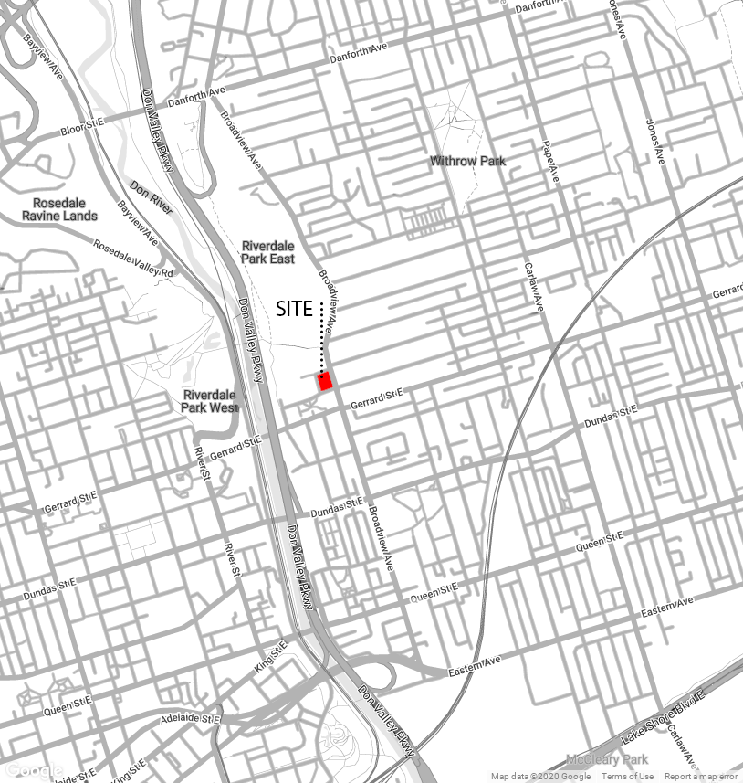

Competition · 2021
Don River Market
A multifunctional urban market and public gathering space celebrating the Don River through an undulating steel canopy and green roof.
- Location: Toronto, Ontario
- Timeline: 2021
- Role: Concept design, architecturally exposed structural steel strategy, plans, sections, and visualizations.
The Don River Market is an urban market building that stimulates its occupants to interact with natural spaces and be mindful of the Don River revitalization history and its significance for the City. The building shelters an indoor exhibition of art from local artists, and spaces for community events and workshops with a winter garden, in addition to a cafe gallery and public washrooms. Its impressive canopy structure extends towards the edges of the block, providing a generous space for an outdoor farmer's market that surrounds the building and food shops with informal seating.
The undulating majestic green roof above the metal canopy structure invites people for walking and relaxing while enjoying the view of the Don River from above. The building's organic and meandering shape, composed of a steel structure and generous curtain walls, is designed to bring the outside in and remind passer-by and users about the River's past and its vital importance in the city. It seeks to offer social gathering spaces that would support small businesses and local community.
Inspired by a biophilic approach, it seeks to imitate and celebrate nature, blending with the local natural landscape while activating an underused space within a busy urban context. The site is currently a vacant space in the city, surrounded by a variety of amenities, including the Bridgepoint hospital, the Old Don Jail museum, Toronto's Public Library, St. John's Presbyterian church, a daycare center, closer to cafes and an extensive residential neighborhood, besides being adjacent to the Don River. Therefore, this site has a strong potential to be integrated into the city, and bringing a multifunctional center to this area would stimulate local economies and celebrate important historical, cultural, and environmental points of Toronto.




Related projects
Explore adjacent work

Denver's Missing Middle
An evolutionary mixed-income townhouse community for Denver's Globeville neighborhood, designed around modular bays, live/work options, and shared outdoor amenities.

Waterloo Centerpiece
A high-density mixed-use district with seven buildings, thirteen towers, pedestrian-oriented streets, green spaces, and transit connectivity.

Cambridge Highlight
A multi-building residential redevelopment introducing 1,046 apartment units and active street edges on a former industrial property.